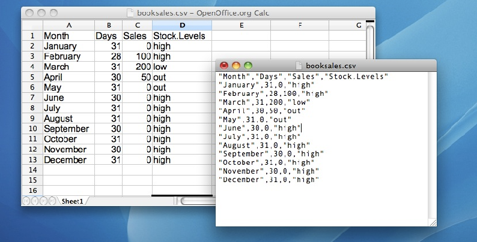
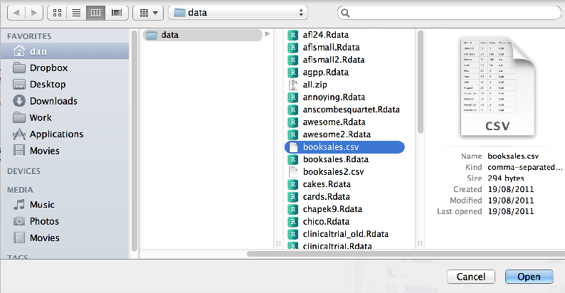

Figure 3.1: jamovi looks like this when you start it.
Robots are nice to work with.
– Roger Zelazny1
In this chapter I’ll discuss how to get started in jamovi. I’ll briefly talk about how to download and install jamovi, but most of the chapter will be focused on getting you started with finding your way around the jamovi GUI. Our goal in this chapter is not to learn any statistical concepts: we’re just trying to learn the basics of how jamovi works and get comfortable interacting with the system. To do this we’ll spend a bit of time looking at datasets and variables. In doing so, you’ll get a bit of a feel for what it’s like to work in jamovi.
However, before going into any of the specifics, it’s worth talking a little about why you might want to use jamovi at all. Given that you’re reading this you’ve probably got your own reasons. However, if those reasons are “because that’s what my stats class uses”, it might be worth explaining a little why your lecturer has chosen to use jamovi for the class. Of course, I don’t really know why other people choose jamovi so I’m really talking about why I use it.
Those are the main reasons I use jamovi. It’s not without its flaws, though. It’s relatively new2 so there is not a huge set of textbooks and other resources to support it, and it has a few annoying quirks that we’re all pretty much stuck with, but on the whole I think the strengths outweigh the weakness; more so than any other option I’ve encountered so far.
Okay, enough with the sales pitch. Let’s get started. Just as with any piece of software, jamovi needs to be installed on a “computer”, which is a magical box that does cool things and delivers free ponies. Or something along those lines; I may be confusing computers with the iPad marketing campaigns. Anyway, jamovi is freely distributed online and you can download it from the jamovi homepage, which is:
At the top of the page, under the heading “Download”, you’ll see separate links for Windows users, Mac users, and Linux users. If you follow the relevant link you’ll see that the online instructions are pretty self-explanatory. As of this writing, the current version of jamovi is 0.9, but they usually issue updates every few months, so you’ll probably have a newer version.3
One way or another, regardless of what operating system you’re using, it’s time to open jamovi and get started. When first starting jamovi you will be presented with a user interface which looks something like Figure 3.1.
To the left is the spreadsheet view, and to the right is where the results of statistical tests appear. Down the middle is a bar separating these two regions and this can be dragged to the left or the right to change their sizes.
It is possible to simply begin typing values into the jamovi spreadsheet as you would in any other spreadsheet software. Alternatively, existing data sets in the CSV (.csv) file format can be opened in jamovi. Additionally, you can easily import SPSS, SAS, Stata and JASP files directly into jamovi. To open a file select the File tab (three horizontal lines signify this tab) at the top left hand corner, select ‘Open’ and then choose from the files listed on ’Browse’ depending on whether you want to open an example or a file stored on your computer.
Analyses can be selected from the analysis ribbon or menu along the top. Selecting an analysis will present an ‘options panel’ for that particular analysis, allowing you to assign different variables to different parts of the analysis, and select different options. At the same time, the results for the analysis will appear in the right ‘Results panel’ and will update in real-time as you make changes to the options.
When you have the analysis set up correctly you can dismiss the analysis options by clicking the arrow to the top right of the optional panel. If you wish to return to these options, you can click on the results that were produced. In this way, you can return to any analysis that you (or say, a colleague) created earlier.
If you decide you no longer need a particular analysis, you can remove it with the results context menu. Right-clicking on the analysis results will bring up a menu and by selecting ‘Analysis’ and then ‘Remove’ the analysis can be removed. But more on this later. First, let’s take a more detailed look at the spreadsheet view.
In jamovi data is represented in a spreadsheet with each column representing a ‘variable’ and each row representing a ‘case’ or ‘participant’.
The most commonly used variables in jamovi are ‘Data Variables’, these variables simply contain data either loaded from a data file, or ‘typed in’ by the user. Data variables can be one of three measurement levels:

These levels are designated by the symbol in the header of the variable’s column.
The ID variable type is unique to jamovi. It’s intended for variables that contain identifiers that you would almost never want to analyse. For example, a persons name, or a participant ID. Specifying an ID variable type can improve performance when interacting with very large data sets.
Nominal variables are for categorical variables which are text labels, for example a column called Gender with the values Male and Female would be nominal. So would a person’s name. Nominal variable values can also have a numeric value. These variables are used most often when importing data which codes values with numbers rather than text. For example, a column in a dataset may contain the values 1 for males, and 2 for females. It is possible to add nice ‘human-readable’ labels to these values with the variable editor (more on this later).
Ordinal variables are like Nominal variables, except the values have a specific order. An example is a Likert scale with 3 being ‘strongly agree’ and -3 being ‘strongly disagree’.
Continuous variables are variables which exist on a continuous scale. Examples might be height or weight. This is also referred to as ‘Interval’ or ‘Ratio scale’.
In addition, you can also specify different data types: variables have a data type of either ‘Text’, ‘Integer’ or ‘Decimal’.
When starting with a blank spreadsheet and typing values in the variable type will change automatically depending on the data you enter. This is a good way to get a feel for which variable types go with which sorts of data. Similarly, when opening a data file jamovi will try and guess the variable type from the data in each column. In both cases this automatic approach may not be correct, and it may be necessary to manually specify the variable type with the variable editor.
The variable editor can be opened by selecting ‘Setup’ from the data tab or by double-clicking on the variable column header. The variable editor allows you to change the name of the variable and, for data variables, the variable type, the order of the levels, and the label displayed for each level. Changes can be applied by clicking the ‘tick’ to the top right. The variable editor can be dismissed by clicking the ‘Hide’ arrow.
New variables can be inserted or appended to the data set using the ‘add’ button from the data ribbon. The ‘add’ button also allows the addition of computed variables.
Computed Variables are those which take their value by performing a computation on other variables. Computed Variables can be used for a range of purposes, including log transforms, z-scores, sum-scores, negative scoring and means.
Computed variables can be added to the data set with the ‘add’ button available on the data tab. This will produce a formula box where you can specify the formula. The usual arithmetic operators are available. Some examples of formulas are:
A + B
LOG10(len)
MEAN(A, B)
(dose - VMEAN(dose)) / VSTDEV(dose)
In order, these are the sum of A and B, a log (base 10) transform of len, the mean of A and B, and the z-score of the variable dose. Figure 3.2 below shows the jamovi screen for the new variable computed as the z-score of dose (from the ‘Tooth Growth’ example data set).
V-functions
Several functions are already available in jamovi and available from the drop down box labelled fx. A number of functions appear in pairs, one prefixed with a V and the other not. V functions perform their calculation on a variable as a whole, where as non-V functions perform their calculation row by row. For example, MEAN(A, B) will produce the mean of A and B for each row. Where as VMEAN(A) gives the mean of all the values in A.
jamovi produces nice American Psychological Association (APA) formatted tables and attractive plots. It is often useful to be able to copy and paste these, perhaps into a Word document, or into an email to a colleague. To copy results right click on the object of interest and from the menu select exactly what you want to copy. The menu allows you to choose to copy only the image or the entire analysis. Selecting “copy” copies the content to the clipboard and this can be pasted into other programs in the usual way. You can practice this later on when we do some analyses.
jamovi also provides an “R Syntax Mode”. In this mode jamovi produces equivalent R code for each analysis. To change to syntax mode, select the Application menu to the top right of jamovi (a button with three vertical dots) and click the “Syntax mode” checkbox there. You can turn off syntax mode by clicking this a second time.
In syntax mode analyses continue to operate as before but now they produce R syntax, and ‘ascii output’ like an R session. Like all results objects in jamovi, you can right click on these items (including the R syntax) and copy and paste them, for example into an R session. At present, the provided R syntax does not include the data import step and so this must be performed manually in R. There are many resources explaining how to import data into R and if you are interested we recommend you take a look at these; just search on the interweb.
There are several different types of files that are likely to be relevant to us when doing data analysis. There are two in particular that are especially important from the perspective of this book:
There are also several other kinds of data file that you might want to import into jamovi. For instance, you might want to open Microsoft Excel spreadsheets (.xls files), or data files that have been saved in the native file formats for other statistics software, such as SPSS or SAS. Whichever file formats you are using, it’s a good idea to create a folder or folders especially for your jamovi data sets and analyses and to make sure you keep these backed up regularly.
One quite commonly used data format is the humble “comma separated value” file, also called a csv file, and usually bearing the file extension .csv. csv files are just plain old-fashioned text files and what they store is basically just a table of data. This is illustrated in Figure 3.3, which shows a file called booksales.csv that I’ve created. As you can see, each row represents the book sales data for one month. The first row doesn’t contain actual data though, it has the names of the variables.

It’s easy to open csv files in jamovi. From the top left menu (the button with three parallel lines) choose ‘Open’ and browse to where you have stored the csv file on your computer. If you’re on a Mac, it’ll look like the usual Finder window that you use to choose a file; on Windows it looks like an Explorer window. An example of what it looks like on a Mac is shown in Figure 3.4. I’m assuming that you’re familiar with your own computer, so you should have no problem finding the csv file that you want to import! Find the one you want, then click on the “Open” button.

There are a few things that you can check to make sure that the data gets imported correctly:
Throughout this book I’ve assumed that your data are stored as a jamovi .omv file or as a “properly” formatted csv file. However, in real life that’s not a terribly plausible assumption to make so I’d better talk about some of the other possibilities that you might run into.
The first thing I should point out is that if your data are saved as a text file but aren’t quite in the proper csv format then there’s still a pretty good chance that jamovi will be able to open it. You just need to try it and see if it works. Sometimes though you will need to change some of the formatting. The ones that I’ve often found myself needing to change are:
The commands listed above are the main ones we’ll need for data files in this book. But in real life we have many more possibilities. For example, you might want to read data files in from other statistics programs. Since SPSS is probably the most widely used statistics package in psychology, it’s worth mentioning that jamovi can also import SPSS data files (file extension .sav). Just follow the instructions above for how to open a csv file, but this time navigate to the .sav file you want to import. For SPSS files, jamovi will regard all values as missing if they are regarded as “system missing” files in SPSS. The ‘Default missings’ value does not seem to work as expected when importing SPSS files, so be aware of this - you might need another step: import the SPSS file into jamovi, then export as a csv file before re-opening in jamovi.5 .
And that’s pretty much it, at least as far as SPSS goes. As far as other statistical software goes, jamovi can also directly open / import SAS and STATA files.
A different problem is posed by Excel files. Despite years of yelling at people for sending data to me encoded in a proprietary data format, I get sent a lot of Excel files. The way to handle Excel files is to open them up first in Excel or another spreadsheet programme that can handle Excel files, and then export the data as a csv file before opening / importing the csv file into jamovi.
Sometimes you want to change the variable level. This can happen for all sorts of reasons. Sometimes when you import data from files, it can come to you in the wrong format. Numbers sometimes get imported as nominal, text values. Dates may get imported as text. ParticipantID values can sometimes be read as continuous: nominal values can sometimes be read as ordinal or even continuous. There’s a good chance that sometimes you’ll want to convert a variable from one measurement level into another one. Or, to use the correct term, you want to coerce the variable from one class into another.
In 3.3 we saw how to specify different variable levels, and if you want to change a variable’s measurement level then you can do this in the jamovi data view for that variable. Just click the check box for the measurement level you want - continuous, ordinal, or nominal.
A really great feature of jamovi is the ability to install add-on modules from the jamovi library. These add-on modules have been developed by the jamovi community, i.e., jamovi users and developers who have created special software add-ons that do other, usually more advanced, analyses that go beyond the capabilities of the base jamovi program.
To install add-on modules, just click on the large “+” in the top right of the jamovi window, select “jamovi-library” and then browse through the various add-on modules that are available. Choose the one(s) you want, and then install them, as in Figure 3.5. It’s that easy. The newly installed modules can then be accessed from the “Analyses” button bar. Try it...useful add-on modules to install include ”scatr” (added under “Descriptives”) and “R j”.
There’s one last thing I should cover in this chapter: how to quit jamovi. It’s not hard, just close the program the same way you would any other program. However, what you might want to do before you quit is save your work! There are two parts to this: saving any changes to the data set, and saving the analyses that you ran.
It is good practice to save any changes to the data set as a new data set. That way you can always go back to the original data. To save any changes in jamovi, select ‘Export’...‘Data’ from the main jamovi menu (button with three horizontal bars in the top left) and create a new file name for the changed data set.
Alternatively, you can save both the changed data and any analyses you have undertaken by saving as a jamovi file. To do this, from the main jamovi menu select ‘Save as’ and type in a file name for this ‘jamovi file (.omv)’. Remember to save the file in a location where you can find it again later. I usually create a new folder for specific data sets and analyses.
Every book that tries to teach a new statistical software program to novices has to cover roughly the same topics, and in roughly the same order. Ours is no exception, and so in the grand tradition of doing it just the same way everyone else did it, this chapter covered the following topics:
We still haven’t arrived at anything that resembles data analysis. Maybe the next Chapter will get us a bit closer!